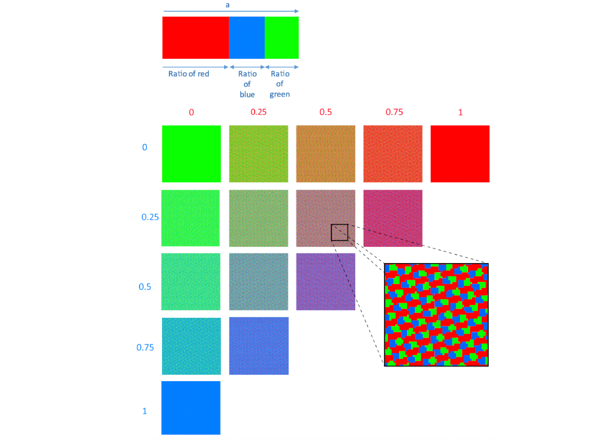
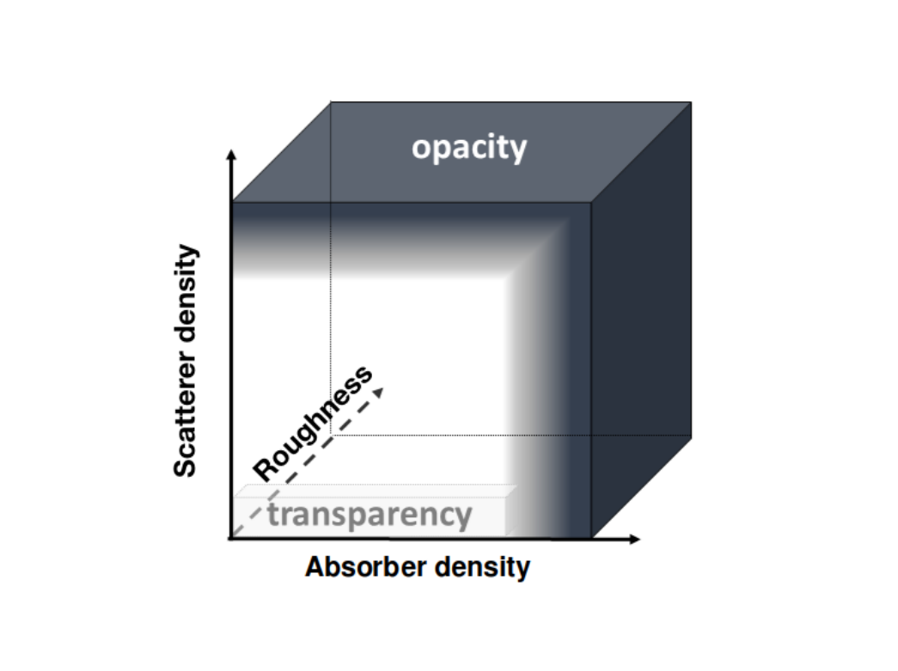

ABOUT
I am a post-doc in the STORM team, IRIT, Toulouse.
My research is at the interface between Computer Graphics and Optics, focusing on the modeling of material appearance based on radiometric acquisitions.
I am currently working with Mathias Paulin on the inverse rendering of translucent material appearance. I am also
collaborating with Romain Pacanowski from Manao team, Inria,
where I conducted a previous post-doc on the design of a calibrated opto-numerical system for the acquisition of translucent material appearance.
I defended my Ph.D. thesis on February 2022, about
Connecting physical and chemical properties with material appearance under the supervision of
Nicolas Holzschuch from Maverick team, Inria, and Pauline Martinetto
from PLUM department, Institut Néel.
RESEARCH
2024
2023
2021
Influence of micro-structural features on the colour of nanocrystallised powders of hematite and visible-NIR reflectance spectra
simulations
Morgane Gerardin, Nicolas Holzschuch, Alain Ibanez, Bernard Schmitt, Pauline Martinetto
Journal of the international colour association, 26, 41-48.
Editor's Page
HAL
PDF
2020
Evaluating edge loss in the reflectance measurement of translucent materials
Lou Gevaux, Lionel Simonot, Raphael Clerc, Morgane Gerardin, and Mathieu Hebert
Applied optics, 59(28), 8939-8950.
Editor's Page
HAL
PDF
Correlation between micro-structural features and color of nanocrystallized powders of hematite
Morgane Gerardin, Nicolas Holzschuch, Alain Ibanez, Bernard Schmitt, Pauline Martinetto
AIC 2020-Association Internationale de la Couleur/Couleur Naturelles-Couleurs Numériques
HAL
PDF
2019

Color Display Using 365 nm UV Light Projection onto an Optimized Fluorescent Pattern Surface
Petar Pjanic, Morgane Gerardin, Anselm Grundhöfer
Journal of Imaging Science and Technology, 63(4), 40501-1.
Editor's Page

Rendering transparent materials with a complex refractive index: semi-conductor and conductor thin layers
Morgane Gerardin, Nicolas Holzschuch, Pauline Martinetto
MAM 2019-7th annual Workshop on Material Appearance Modeling (pp. 13-16). Eurographics.
Editor's Page
HAL
PDF
SLIDES
A translucency classification for computer graphics
Morgane Gerardin, Lionel Simonot, Jean-Philippe Farrugia, Jean-Claude Iehl, Thierry Fournel, Mathieu Hébert
Electronic Imaging, Material Appearance.
HAL
PDF
Optimizing emissive and color changing projection surfaces
Petar Pjanic, Anselm Grundhöfer, Morgane Gerardin
U.S. Patent No. 10,511,815. Washington, DC: U.S. Patent and Trademark Office.
PDF

Translucidité: pour y voir plus clair
Lionel Simonot, Morgane Gerardin, Mathieu Hébert, Thierry Fournel, Jean-Philippe Farrugia
Quand la matière diffuse la lumière, Les Presses des Mines, pp.405-413, 2019, 9782356715562.
HAL
2018
Simulating the composition and structuration of coloring layers in historical painting from non-invasive spectral reflectance measurements
Fabien Pottier, Morgane Gerardin, Anne Michelin, Mathieu Hébert, and Christine Andraud
Comptes Rendus Physique, 19(7), 599-611.
Editor's Page
PDF
Halo and subsurface scattering in the transparent coating on top of a diffusing material
Lionel Simonot, Mathieu Hébert, Morgane Gerardin, Cyrielle Monpeurt, Thierry Fournel
JOSA A, 35(7), 1192-1203.
Editor's Page
HAL
PDF
Ph.D. Thesis
Connecting physical and chemical properties with material appearance
Morgane Gerardin
Université Grenoble Alpes
HAL (author's version)